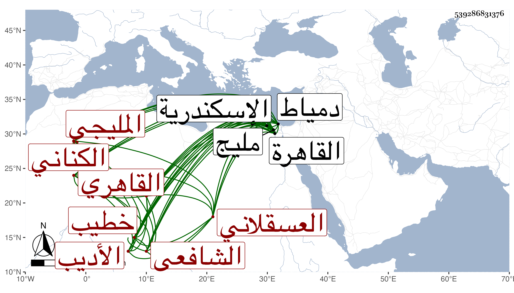

0902Sakhawi.DawLamic.ITO20230111-ara1.EIS1600.539286831376
Biography ID: 539286831376
إبراهيم بن أحمد بن علي بن عمر الأديب برهان الدين أبو محمد بن الشهاب الكناني العسقلاني الأصل المليجي القاهري الشافعي خطيب جامع الأقمر ولد سنة ثمانين وسبعمائة تقريبا بمليج وانتقل منها إلى القاهرة واشتغل بها بعد أن حفظ القرآن والمنهاج وتردد إلى المشايخ وبحث في الفقه على البدر بن أبي البقاء السبكي القاضي فانه كان يقرىء أولاده وفضل وسمع الحديث على الزين القمني وغيره وجلس مع الشهود ثم ترك وخطب بجامع الاقمر دهرا وحج مع الرجبية في سنة خمس وثلاثين فجاور بقية السنة وقرأ فيها البخاري على الجمال الشيبي ودخل اسكندرية ودمياط متفرجا وناب في بعض البلاد لشيخنا وغيره وتعانى نظم الشعر فصار يمتدح الأعيان والقضاة التماسا لنائلهم وبرهم وربما يقع له الجيد وهو أحد من امتدح شيخنا في ختم فتح الباري مما أودعته في الجواهر بل قال في أبياتا ونظمه كثير سار فمنه :
| وافيت بيتا قلت فيه بأنه | من أمه أضحى بفضلك آمنا |
| ومننت لي بجواره فغدوت في | أرجائه بعد التحرك كامنا |
| فاسمع وجد واصفح ورد | عن ثقل ذنب في الجوانح كامنا |
وله غنية المحتاج إلى نظم المنهاج وصل فيه إلى أثناء الصلاة وشواهد التحقيق في نظم قصة يوسف الصديق والمدائح النبوية والمناقب المحمدية بل أنشأ ديوان خطب فيه بلاغة وكان حين المحاضرة طلق العبارة فصيح الخطابة متوددا مع بعض إخساس في النحو وربما تكلم في شهادته فيما قيل . مات في آخر سنة إحدى وسبعين أو أول التي تليها بعد أن كف بل وأثكل ولده البدر محمدا واحتسب عوضه الله وإيانا خيرا .
